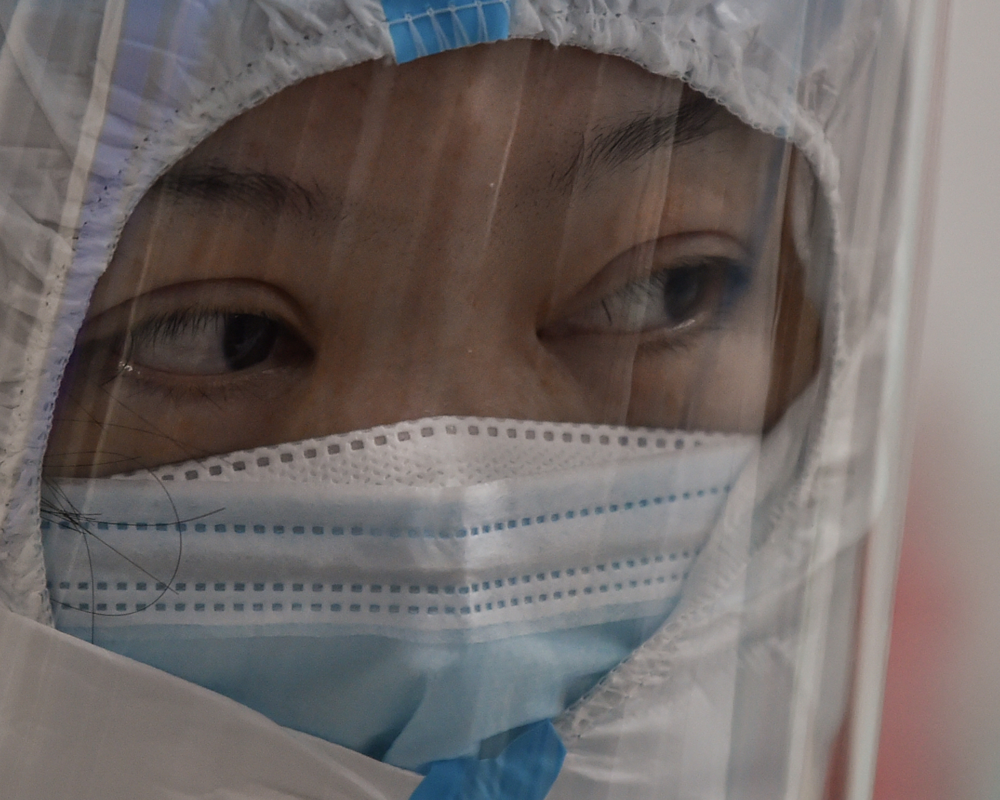
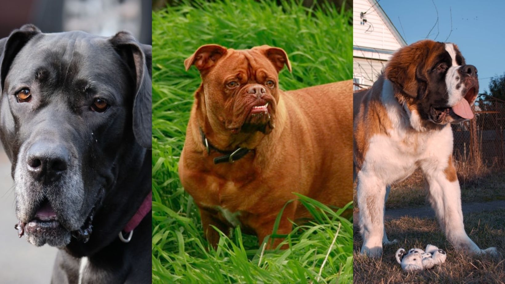
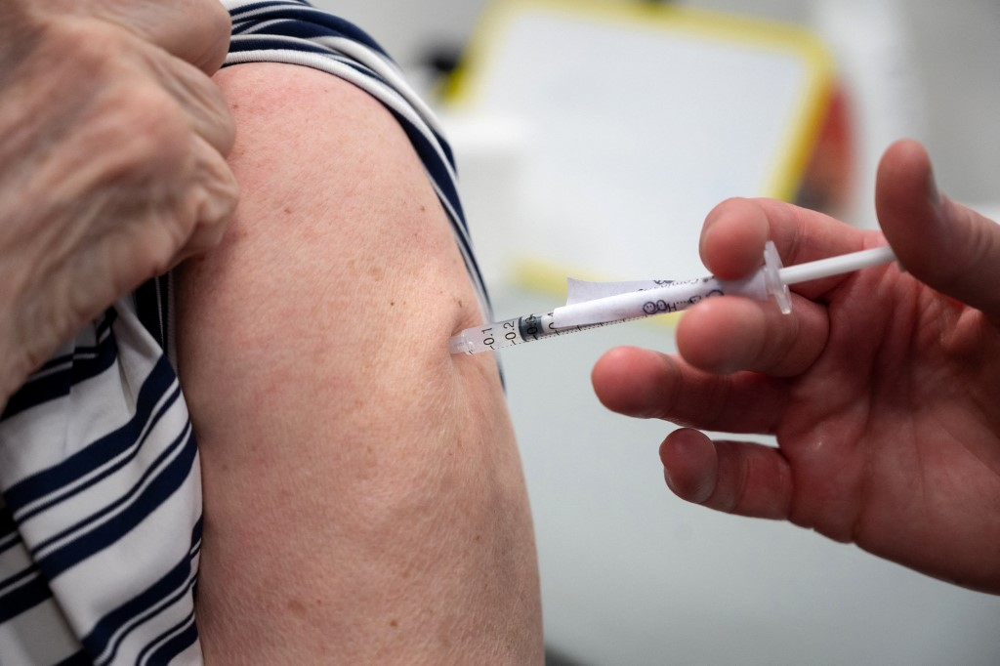
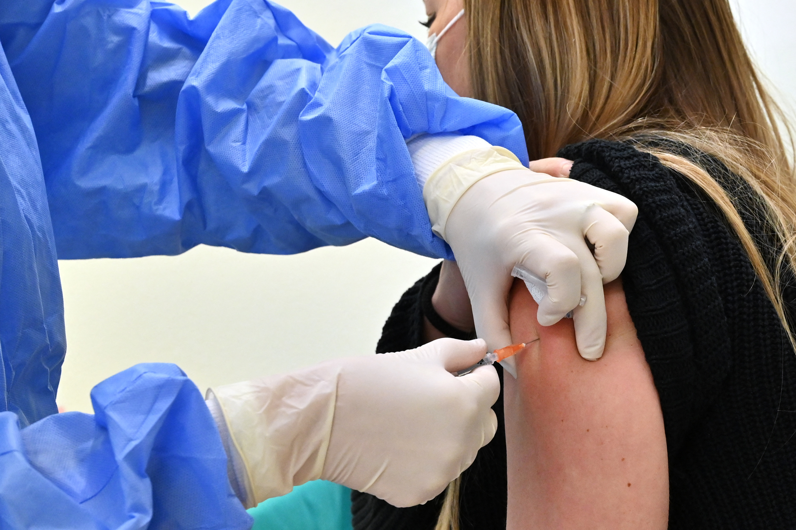
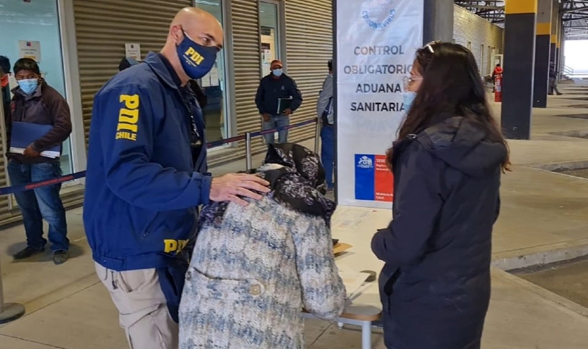
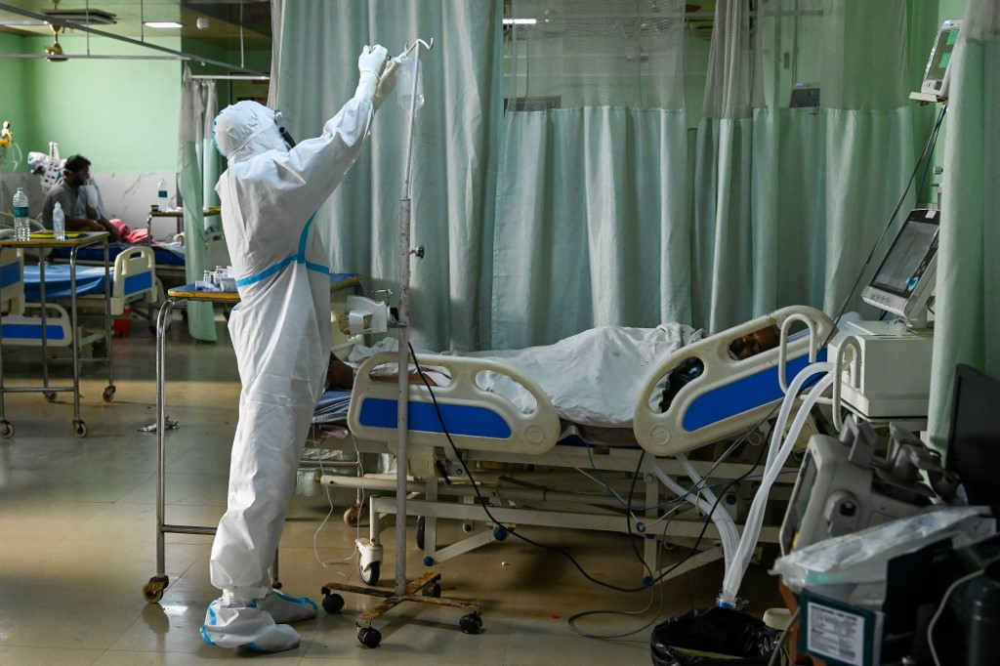
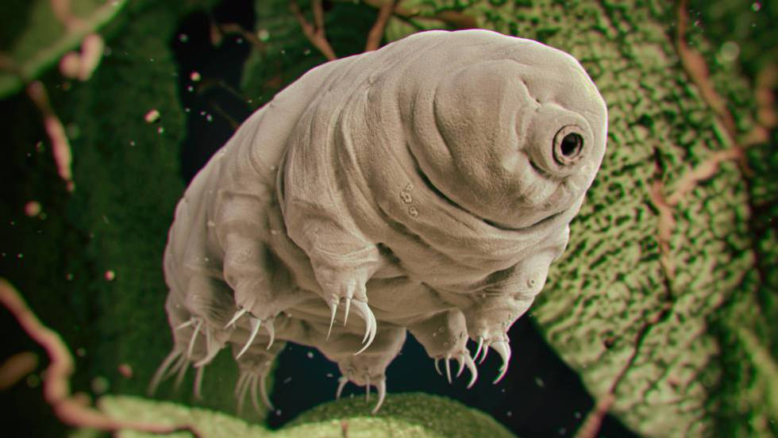

¿Un animal?¿Fuga de laboratorio?Las cuatro teorías en juego sobre el origen del Covid-19
El informe sobre los orígenes de la pandemia de Covid-19, realizado por expertos de la OMS y chinos, analizó cuatro hipótesis sobre cómo llegó el virus al ser humano, clasificándolas de la más a la menos probable.
Esta hipótesis, considerada por los expertos 'entre probable y muy probable', defiende que el virus se transmitió desde el animal huésped original, probablemente un murciélago, al ser humano a través de un animal huésped intermedio.
Argumentos a favor
Aunque los virus más parecidos se hallaron en murciélagos, la distancia evolutiva entre esos virus y el SARS-CoV-2 que causa el covid-19 se estima en varias décadas, lo que sugiere un 'eslabón perdido' entre ambos, según el informe.
Otros virus muy parecidos también se detectaron en pangolines, lo que sugiere que la transmisión entre especies a partir de los murciélagos ocurrió al menos una vez.
El informe también señala que se observó un paso intermedio que implica un huésped amplificador para otros virus.
Argumentos en contra:
El SARS-CoV-2 se ha hallado en un creciente número de especies de animales, pero los estudios sugieren que los humanos los infectaron.
Hasta ahora, las pruebas realizadas a una amplia gama de animales domésticos y salvajes en la región donde comenzó el brote no mostraron indicios de SARS-CoV-2.
Próximos pasos:
Los expertos sugieren que el virus podría haberse introducido a través de las importaciones a Wuhan de carne procedente de granjas de animales salvajes en otras provincias chinas.
'Aunque esto no demuestra una relación, sí proporciona un próximo paso significativo' para examinar, según el informe.
Esta hipótesis, considerada de 'posible a probable', supone que el SARS-CoV-2 pasó directamente del huésped original, probablemente un murciélago, a los humanos.
A favor:
La mayoría de coronavirus que se halla actualmente en los humanos procede de animales.
Así se han encontrado virus con una gran similitud genética con el SARS-CoV-2 en murciélagos 'Rhinolophus'.
El documento señala también que 'se han encontrado anticuerpos contra las proteínas de los coronavirus de los murciélagos en seres humanos que han estado en estrecho contacto con ellos'.
Virus similares también se detectaron en el pangolín malayo y el informe no puede descartar que los visones sean la fuente principal.
En contra:
Aunque el parentesco genético más cercano al SARS-CoV-2 es un virus de murciélago, el análisis indica que hay una importante diferencia evolutiva entre ellos.
'Además, no es probable que los contactos entre humanos y murciélagos o pangolines sean tan frecuentes como el contacto entre humanos y ganado o animales salvajes de granja'.
Próximos pasos:
El informe señala que los estudios de rastreo de las cadenas de suministro de los mercados de Wuhan proporcionan algunas 'pistas creíbles', que deberían ampliarse a otros países.
Esta hipótesis, considerada 'posible', sugiere que los alimentos congelados o sus envases podrían haber sido un potencial vector del SARS-CoV-2.
Pekín defiende la idea del origen extranjero del patógeno, pero, según el informe, la hipótesis de su entrada en China a través de alimentos congelados en 2019 sería 'extraordinaria', porque el virus 'no circulaba entonces a gran escala' en el mundo.
A favor:
China registró algunos brotes relacionados con la importación de productos congelados en 2020.
El SARS-CoV-2 se ha detectado en el embalaje exterior de productos congelados importados, lo que sugiere que el virus puede resistir al frío.
En contra:
'No hay pruebas concluyentes de la transmisión del SARS-CoV-2 a través de los alimentos y la probabilidad de que se produzca una contaminación de la cadena de frío con el virus a partir de un reservorio es muy baja', señala el informe.
Próximos pasos:
Los expertos pidieron que se examinen los restos de productos congelados, especialmente los animales salvajes de granja, que se vendieron en el mercado Huanan de Wuhan desde diciembre de 2019, si siguen disponibles.
Esta hipótesis, considerada 'extremadamente improbable', considera que el SARS-CoV-2 se propagó por un accidente de laboratorio.Los expertos no consideraron la hipótesis de la liberación deliberada, ya descartada por científicos.
A favor:
'Aunque son poco comunes, los accidentes en laboratorio ocurren', señala el informe.
Y el CoV RaTG13, la cepa más cercana al SARS-CoV-2 y hallada en muestras anales de murciélagos, había sido secuenciado en el Instituto de Virología de Wuhan.
En contra:
'No hay registros de virus estrechamente relacionados con el SARS-CoV-2 en ningún laboratorio antes de diciembre de 2019, ni de genomas que combinados pudieran proporcionar un genoma del SARS-CoV-2', dice el informe.
'El riesgo de cultivar accidentalmente el SARS-CoV-2 en el laboratorio es extremadamente bajo', agrega.
Próximos pasos:
'Revisión administrativa e interna periódica de los laboratorios de bioseguridad de alto nivel en todo el mundo.Seguimiento de las nuevas pruebas aportadas sobre posibles fugas en laboratorios'.
Posted On: 2021-03-29T13:59:00
Posted By: Meganoticias









Content Date: 2021-03-29
Download Date: 2021-05-13
Document ID: L0C04C81D